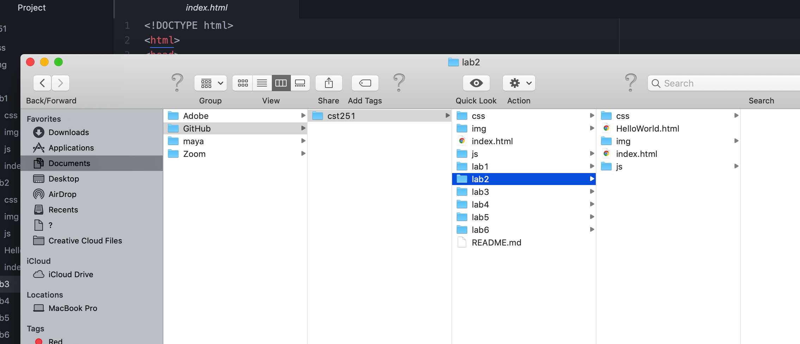
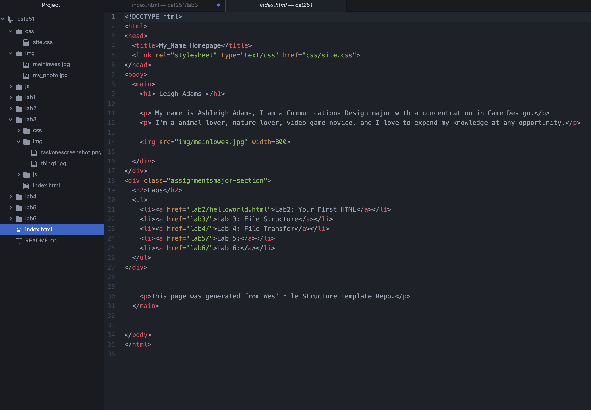

The subject of this lab is to learn how to create structure within our file documents and add new files to the existing structure.
Overall, there weren't many issues when completing this lab. The only trouble we came across was inserting images into the index.html. We fixed this issue by realizing that the file names were mixed up. After this problem was resolved, the rest of the lab went smoothly.
Here is a screenshot of the files we each created on our own local computers.
This is the file structure on our computers.

This is Maddy's index.html page
This is Ashleigh's index.html page

This is our html source code for Lab 3.